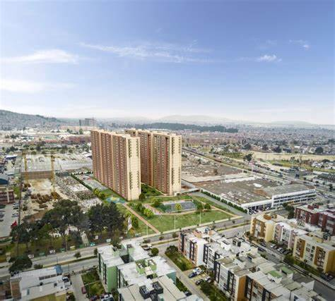

En el barrio Madelena, durante las horas de la mañana, se presenta una alta congestión vehicular y peatonal, causada por la gran afluencia de personas, vehículos particulares y transporte público. Esta situación se relaciona principalmente con una inadecuada planificación y deficiente implementación de rutas de transporte. El presente proyecto tiene como objetivo analizar esta problemática y proponer soluciones que contribuyan a disminuir la congestión en la zona.
